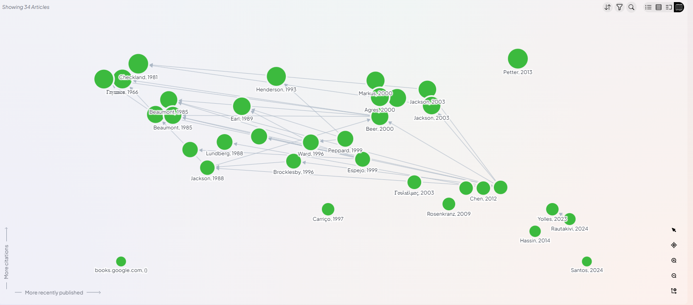

Mapeamento da estrutura intelectual de um campo em formação: uma análise cienciométrica das tradições que conectam o controle de sistemas, os instrumentos de governo e a estratégia de desenvolvimento produtivo.
Este estudo mapeia a estrutura intelectual da interseção entre três tradições intelectuais que raramente dialogam de forma explícita: a cibernética organizacional (o controle e a viabilidade de sistemas complexos), os instrumentos de governo e a regulação (os meios pelos quais o Estado atua sobre a sociedade) e a política industrial (a ação deliberada do Estado sobre a estrutura produtiva).
A partir de dez obras-semente canônicas, aplicou-se amostragem por bola de neve sobre a base bibliográfica aberta OpenAlex, reunindo um corpus de centenas de trabalhos. Sobre esse corpus, calcularam-se redes de cocitação e de acoplamento bibliográfico, agrupamentos de comunidades, centralidade de intermediação, rajadas de citação e o coeficiente de beleza — um conjunto de medidas que, em conjunto, revela onde o campo se concentra, onde ele se fragmenta e quais obras funcionam como pontos de passagem entre as tradições.
Ao mapeamento bibliométrico global soma-se uma revisão da literatura brasileira (ver o caso brasileiro), que situa as três tradições na trajetória nacional de regulação, política industrial e governança de tecnologias. Trabalho colaborativo de Bruno Queiroz, Lucas Freire e Claucia Faganello.
Palavras-chave: cienciometria; cibernética organizacional; instrumentos de governo; política industrial; análise de cocitação; acoplamento bibliográfico; estrutura intelectual.
This study maps the intellectual structure of the intersection between three rarely connected traditions: organizational cybernetics (the control and viability of complex systems), the tools of government and regulation (the means by which the state acts upon society), and industrial policy (deliberate state action on the productive structure). Starting from ten canonical seed works, snowball sampling over the open OpenAlex database yielded a corpus of several hundred works. Co-citation and bibliographic-coupling networks, community detection, betweenness centrality, citation-burst detection, and the beauty coefficient jointly reveal where the field concentrates, where it fragments, and which works act as crossing points between traditions.
Keywords: science of science; organizational cybernetics; tools of government; industrial policy; co-citation analysis; bibliographic coupling; intellectual structure.
Distribuição relativa da produção entre os três eixos temáticos, computada sobre a série anual do corpus.
A delimitação do campo parte de uma hipótese: as três tradições compartilham um problema comum — o governo de sistemas complexos sob incerteza — mas desenvolveram vocabulários, métodos e comunidades de citação largamente independentes. Cada eixo é ancorado por obras-semente reconhecidas e verificadas individualmente na base OpenAlex.
A tradição inaugurada por W. Ross Ashby (a lei da variedade requisita) e desenvolvida por Stafford Beer (o Modelo de Sistema Viável) trata das condições formais para que um sistema mantenha sua viabilidade num ambiente que o supera em complexidade. Ralph Espejo e Alfonso Reyes estendem o programa para o desenho de organizações. O interesse para a política pública é direto: regular é, em última instância, um problema de variedade e de capacidade de resposta.
A tradição de Christopher Hood e Helen Margetts — dos Tools of Government à redescoberta da nodalidade — classifica os meios de que o Estado dispõe para detectar e atuar sobre a sociedade. A literatura subsequente sobre desenho e composição de instrumentos (Howlett, Salamon, Borrás) constitui o núcleo mais denso e contemporâneo do corpus.
A tradição de Dani Rodrik e Mariana Mazzucato recoloca o Estado como agente deliberado da transformação produtiva — do desenho institucional da política industrial do século XXI ao Estado empreendedor e às missões. É o eixo mais recente em ascensão e o que mais se aproxima dos outros dois a partir de 2013.
As dez obras-semente, por eixo, com identificadores verificados na base OpenAlex.
| Eixo | Obra-semente | Identificador |
|---|
O desenho metodológico combina uma estratégia de amostragem deliberada com um conjunto de medidas consagradas em cienciometria. Todas as etapas são reprodutíveis e parametrizadas.
Seguindo as diretrizes de Wohlin (2014), partiu-se das obras-semente em duas direções: a bola de neve progressiva (trabalhos que citam as sementes) e a regressiva (trabalhos citados pelas sementes). Um filtro temático por vocabulário controlado, aplicado após a coleta, mantém apenas os trabalhos pertinentes a pelo menos um dos três eixos.
Aplicadas ao corpus, as medidas produzem duas redes complementares: a de cocitação, com , e a de acoplamento bibliográfico, com . O particionamento de Leiden identifica . A cobertura de referências citadas alcança do corpus, o que limita a bola de neve regressiva das obras-semente em formato de livro (ver limitações).
Parâmetros de execução do funil de coleta e análise.
| Parâmetro | Valor | Observação |
|---|---|---|
| Consultas de texto | 9 × 150 | nove buscas temáticas, até 150 resultados cada |
| Bola de neve progressiva | 6 × 10 | seis páginas de citantes por obra-semente |
| Bola de neve regressiva | 60 / 400 | sessenta âncoras, teto de 400 referências novas |
| Agrupamento de Leiden | CPM + Mod. | cocitação por CPM; acoplamento por modularidade |
| Detecção de rajadas | s=2 · γ=1 | razão de estados e custo de transição |
| Coeficiente de beleza | Eq. 2 | formulação de Ke et al. (2015), PNAS |
A coleta avança por etapas encadeadas, cada uma salva em ponto de verificação para permitir a retomada. Os conjuntos de dados de cada etapa estão disponíveis para download na seção de dados.
A cibernética domina a produção desde os anos 1970. A regulação e a política industrial convergem a partir de 2007 — com a segunda edição de Hood & Margetts — e crescem fortemente entre 2013 e 2019, no rastro do debate sobre o Estado empreendedor e as missões. A aproximação simultânea dos três eixos torna-se visível a partir de 2013.
Série anual de trabalhos por eixo (um mesmo trabalho pode contar para mais de um eixo). Clique na legenda para mostrar ou ocultar um eixo; clique em um ano para ver as obras de destaque daquele ano.
São as obras cujo título ou resumo mobiliza o vocabulário de dois ou mais eixos — uma aproximação lexical das zonas de intercâmbio entre tradições, no sentido de Galison. A borda vermelha assinala as que mobilizam os três eixos. Por se apoiarem em coocorrência de termos (e não em citação direta), devem ser lidas como indícios de convergência a confirmar, e não como prova: são poucas, mas é nelas que o argumento começa.
Dispersão das obras-ponte por ano e número de citações (o raio é proporcional às citações).
src/bridges_higher_order.py.src/coauthorship.py.src/experiment_cplx.py.src/paths_between.py.A rede de acoplamento bibliográfico, normalizada pela força de associação, é particionada pelo algoritmo de Leiden. Cada comunidade reúne trabalhos com padrões de citação semelhantes — uma frente de pesquisa, e não um tópico declarado. As etiquetas derivam dos termos mais distintivos dos títulos de cada agrupamento.
Os seis maiores agrupamentos por número de trabalhos; as etiquetas reúnem os termos mais distintivos de cada comunidade.
Rede de cocitação reconstruída a partir de uma bola de neve das treze obras-semente: recuperam-se os trabalhos que as citam (cerca de 590) e, das suas listas de referência, tomam-se as obras mais cocitadas — duas obras ligam-se quando aparecem juntas na bibliografia de um mesmo trabalho, e a espessura da linha conta quantas vezes isso ocorre. É a estrutura que o próprio campo desenha ao citar: a cor indica o eixo (atribuído pelo vocabulário do título e dos tópicos); o tamanho do nó, o total de citações. Arraste os nós para reorganizar; clique para abrir a obra no OpenAlex.
Abrir o explorador interativo ↗ filtre por eixo, ajuste o limiar de cocitação, busque obras e abra cada uma no OpenAlex.
Núcleo de obras mais cocitadas (arestas com peso ≥ 3). A disposição por força revela três comunidades visualmente distintas — cibernética, instrumentos de governo e política industrial. As três obras de Lange caem em comunidades diferentes (cibernética e planejamento), retrato visual de uma recepção ainda compartimentada. É um corte local e delimitado (bola de neve das sementes), não o funil completo do Colab; o eixo é atribuído por vocabulário. Todos os nós foram verificados contra o OpenAlex — referências citadas que já não resolvem (registros deletados/fundidos) foram removidas para manter apenas obras reais.
Períodos de citação anormalmente intensa em relação ao fluxo total do corpus. O peso indica o excesso de citações acumulado no intervalo. Brain of the Firm (1996–2013) registra a rajada histórica mais forte; Espejo & Reyes (a partir de 2022) registra a mais recente — sinal de um reaquecimento contemporâneo da cibernética organizacional.
Obras de longa hibernação seguida de despertar abrupto. O coeficiente B mede a intensidade desse despertar; tm é o número de anos até o pico de citações. Brain of the Firm (Beer, 1972) dormiu 41 anos antes de despertar; a Introdução à Cibernética (Ashby, 1956) esperou quase sete décadas para ser redescoberta pela literatura de governança digital.
As vinte obras não-semente mais citadas do corpus. Autopoiesis and Cognition (Maturana & Varela, 1980) lidera pelo eixo da cibernética; a literatura de composição de instrumentos de política (Howlett, Borrás, Rogge) domina o eixo da regulação.
A convergência mapeada não é mera curiosidade bibliométrica: aponta para uma síntese ainda incipiente, mas fértil. Cada eixo aporta uma peça de um mesmo problema — governar uma estrutura produtiva complexa sob incerteza.
A cibernética organizacional oferece uma teoria da capacidade: pela lei da variedade requisita (Ashby) e pelo Modelo de Sistema Viável (Beer), um aparato de governo só regula um sistema produtivo se dispuser de variedade interna e de canais de retroalimentação à altura da complexidade que pretende dirigir. A tradição dos instrumentos de governo (Hood; Margetts) fornece o inventário operacional dessa capacidade — nodalidade, autoridade, recursos e organização — e a gramática para combiná-los. A política industrial orientada por missões (Rodrik; Mazzucato) acrescenta o propósito e o problema de coordenação que mobiliza os dois primeiros.
As poucas obras que articulam os três eixos — o Estado empreendedor, a política industrial para o século XXI — situam-se exatamente nesse ponto de encontro. Lidas em conjunto, sugerem desenhar a política industrial menos como um plano estático e mais como um sistema viável: instrumentos adaptativos, monitoramento contínuo e correção por retroalimentação. O reaquecimento recente da cibernética organizacional — uma bela adormecida que desperta no mesmo período da explosão do debate sobre missões — abre uma janela para um desenho de política industrial centrado em capacidade e variedade, não apenas em incentivos.
Para o IPEA, a leitura é uma agenda, não uma conclusão: a convergência ainda é tênue — poucas obras-ponte completas, e identificadas por vocabulário, não por citação (ver limitações). É justamente aí que há espaço para contribuição original: formular, a partir das três tradições, um arcabouço de capacidade estatal para a política industrial brasileira.
Enquanto as demais seções mapeiam a estrutura intelectual global do campo, esta examina sua manifestação brasileira — onde as três tradições têm raízes institucionais profundas, mas raramente dialogam de forma explícita. O Brasil ocupa posição singular: desde a Era Vargas, o Estado articula regulação, fomento e planejamento setorial, protagonismo reformulado, nas últimas décadas, à luz das tecnologias digitais.
A regulação estatal é o conjunto de normas, instrumentos e instituições por meio dos quais o Estado intervém na economia para corrigir falhas de mercado, prover bens públicos e promover o desenvolvimento (PECI; SOBRAL, 2008). No Brasil, o arcabouço moderno é recente: nasce das reformas e privatizações dos anos 1990, com as agências independentes — ANEEL (1996), ANATEL (1997), ANP (1997), ANVISA (1999) e ANS (2000) —, inspiradas nas comissões reguladoras norte-americanas e voltadas a conferir estabilidade e insulamento técnico às decisões. A literatura aponta tensão persistente entre autonomia regulatória e prestação de contas democrática, e entre eficiência econômica e objetivos de política industrial (SHADLEN; FONSECA, 2013) — a ANVISA é caso ilustrativo, atuando ao mesmo tempo como reguladora sanitária e instrumento de política industrial farmacêutica.
Na fronteira digital, a Lei Geral de Proteção de Dados (2018) e o Marco Civil da Internet (2014) avançaram, mas restam lacunas na regulação de inteligência artificial, algoritmos e Internet das Coisas (IoT) — o Decreto 9.854/2019 (Plano Nacional de IoT) é apontado como conceitualmente impreciso e insuficiente (BIONI; LUCIANO, 2019). A rigidez regulatória e a fragmentação dos processos de certificação de produtos digitais constituem barreira concreta à inovação (BARBALHO et al., 2018).
Da industrialização por substituição de importações — CSN (1941), Petrobras (1953), BNDE (1952) — ao Plano de Metas e ao II PND, consolidou-se uma estrutura industrial diversificada, mas com dependências tecnológicas (SUZIGAN, 1996; FERRAZ; KUPFER; HAGUENAUER, 1996). A crise dos anos 1980 e as reformas liberalizantes dos anos 1990 romperam com o modelo desenvolvimentista (ALMEIDA, 2009).
A retomada explícita veio no ciclo de 2003–2014: a PITCE (2004) introduziu seletividade setorial e articulação com inovação; a Política de Desenvolvimento Produtivo (2008) ampliou o escopo a mais de 25 setores, com o BNDES e a Petrobras como vetores; o Plano Brasil Maior (2011–2014) enfatizou competitividade sistêmica; e o Inova Empresa (2013) mobilizou R$ 32,9 bilhões (ARBIX, 2019; ALMEIDA; LIMA-DE-OLIVEIRA; SCHNEIDER, 2014). A literatura é crítica: falhas de coordenação interinstitucional, ausência de metas de produtividade e de sistemas de avaliação, cobertura excessivamente ampla e episódios de escolha de campeões (picking winners) comprometeram a efetividade (GUIMARÃES, 2021; ALMEIDA, 2009). A Nova Indústria Brasil (2023) retoma a agenda — meta de elevar a indústria de transformação de 11% para 15% do PIB até 2033 —, articulando transformação digital, transição energética e bioeconomia.
A cibernética — ciência dos sistemas de controle e comunicação, fundada por Norbert Wiener (1948) e desenvolvida por Ashby, von Foerster e Stafford Beer — oferece, por seu núcleo conceitual (retroalimentação, homeostase, variedade, controle adaptativo), ferramentas para projetar sistemas complexos. A cibernética de segunda ordem (von Foerster) incorpora o observador, abrindo caminho para governança participativa e democracia digital. A experiência histórica de referência é o Cybersyn chileno (1971–1973), sob Beer, que buscou o controle em tempo real da economia chilena; abordagens de governança baseada em modelos — como o controle adaptativo de recursos hídricos — ilustram seu potencial para setores regulados (MODEL-BASED GOVERNANCE, 2025).
No Brasil, contudo, o uso explícito do referencial é escasso: uma busca específica por trabalhos que mobilizem Stafford Beer ou o Modelo de Sistema Viável (MSV) em regulação, política industrial e gestão pública recuperou poucos resultados desde 2010. O achado mais aderente é a dissertação de Marconi Canuto Brasil (FGV/EBAPE, 2008), que analisa a viabilidade do sistema de auditorias de obras públicas do TCERJ à luz do MSV; a literatura recente sobre capacidades estatais e inovação na gestão pública converge tematicamente com a lógica cibernética, mas raramente nomeia o referencial (REVISTA DO SERVIÇO PÚBLICO, 2025; DESENVOLVIMENTO EM QUESTÃO, 2024). Na regulação de tecnologias cibernéticas, persistem lacunas (Decreto 9.854/2019; PL 2.338/2023 sobre IA) e a homologação de produtos é fragmentada e inconsistente entre agências (BARBALHO et al., 2018; BIONI; LUCIANO, 2019).
A Indústria 4.0 — convergência de sistemas ciberfísicos, IoT, grandes volumes de dados, IA e automação — reabre o debate. A cibernética oferece não apenas tecnologias, mas uma epistemologia de controle e adaptação aplicável ao desenho de políticas industriais: monitoramento em tempo real, retroalimentação entre metas e resultados, alocação adaptativa de recursos. Instrumentos de financiamento (crédito do BNDES, subvenções da FINEP) e compras governamentais ligam política industrial e difusão de tecnologias digitais, com resultados heterogêneos entre setores (ALMEIDA; LIMA-DE-OLIVEIRA; SCHNEIDER, 2014; IEIS; SILVA; BASSI, 2012). As principais barreiras são a fragmentação da certificação, as lacunas na regulação de IoT e IA e a desarticulação interinstitucional; como fronteira, propõe-se uma regulação adaptativa inspirada em princípios cibernéticos, da qual o ambiente regulatório experimental (sandbox) do Banco Central é precedente (MODEL-BASED GOVERNANCE, 2025).
A revisão identifica lacunas convergentes: mecanismos de coordenação interinstitucional; sistemas nacionais de homologação e certificação; evidência empírica robusta sobre o impacto de intervenções cibernéticas na produtividade e na governança; modelos de regulação adaptativa; e a dimensão de direitos, segurança e democracia na regulação de IA. A agenda recomenda combinar análise institucional comparada, avaliação de políticas por indicadores, estudos de rede entre atores, modelagem cibernética de regimes regulatórios e ensaios controlados aleatorizados. Em síntese: os três campos são interdependentes no desenvolvimento brasileiro, a cibernética permanece subexplorada como ferramenta de gestão pública, e a Nova Indústria Brasil é a oportunidade de incorporar princípios cibernéticos — desde que com coordenação, avaliação e adaptação robustas.

Material desta seção (download):
A busca é documentada e deliberada: em Scopus e SciELO, com cadeias booleanas explícitas sobre o vocabulário da cibernética organizacional ("organizational cybernetic" OR "vsm" OR "viable system model" OR "stafford beer"…) cruzado com "Brasil"; uma segunda cadeia foi construída sobre as obras-semente do mapeamento global. É uma estratégia transparente e reprodutível em parte — mas sem protocolo sistemático completo (fluxograma, critérios de inclusão/exclusão e contagens de deduplicação reportados). O conjunto é recente (44% a partir de 2015) e de citação relevante (mediana de 63); o subconjunto de política industrial (73) pende para capacidade estatal e desenvolvimento, enquanto a literatura completa (71 referências) carrega também os clássicos da cibernética.
Ao contrário do que uma comparação apressada sugeriria, os dois corpora não são disjuntos. A literatura completa da revisão inclui o núcleo intelectual global — Beer (cinco entradas), Ashby, Espejo & Reyes, o Modelo de Sistema Viável (nove menções), Espinosa & Walker, Brocklesby — além de Rodrik, Mazzucato e Howlett, e dos clássicos do desenvolvimento (Amsden, Evans, Chang). A revisão bebe das mesmas fontes e foi, em parte, semeada pelo mapeamento global. (Registro de honestidade: uma checagem anterior, restrita ao subconjunto de 73 trabalhos de política industrial contra apenas as listas-topo, sugeriu "sobreposição nula"; o cruzamento com a literatura completa mostra o oposto.)
Um teste mais fino confirma a ligação e a delimita. Cruzando as listas de referências dos 44 trabalhos com identificador (via OpenAlex) contra todo o núcleo de cocitação (não só as sementes), onze trabalhos brasileiros tocam o núcleo global — mas por apenas cinco obras, todas de economia do desenvolvimento: Rodrik (Industrial Policy for the 21st Century e Economic Development as Self-Discovery), Porter (Competitive Advantage of Nations) e Nelson & Winter (Evolutionary Theory of Economic Change). Nenhum cita as obras da cibernética (Beer, Ashby, Modelo de Sistema Viável) ou dos instrumentos de governo (Hood). O elo é real, porém estreito e exclusivamente pelo eixo da política industrial — esse conjunto de obras-ponte é exportável à parte para triagem (recorte cruzamento na central de dados).
Daí a precisão do diagnóstico: a cibernética na base é majoritariamente internacional (clássicos e aplicações de complexidade/sustentabilidade), e a produção brasileira aplicada cita o cânone da política industrial (Rodrik), mas não o da cibernética. O relatório focado (busca por Stafford Beer e pelo Modelo de Sistema Viável no Brasil) reforça: o uso aplicado explícito dessa tradição na produção nacional é escasso, sendo a dissertação do TCERJ (FGV/EBAPE, 2008) o caso mais aderente. A lacuna não é conceitual (a convergência já está na base de referências) — é empírico-nacional: falta trabalho brasileiro que de fato aplique a lente cibernética à regulação e à política industrial.
É uma revisão conceitualmente integrada e atual (alcança a NIB 2023), que articula deliberadamente as três tradições e parte de uma busca documentada — forte como panorama e como ponto de partida. Pequenos pontos de higiene bibliográfica (uma citação não resolvida; entradas de autoria institucional) marcam seu caráter preliminar. Seu mérito maior é negativo e produtivo: expõe a oportunidade — a aplicação brasileira do referencial cibernético à política industrial está por fazer. É o que a síntese a seguir propõe.
O mapeamento global revela três tradições com diálogo tênue: um núcleo cibernético coeso (Beer, Ashby, Modelo de Sistema Viável), um agrupamento denso de instrumentos de governo (Hood, Margetts, composição de instrumentos) e uma política industrial mais periférica (Rodrik, Mazzucato); as poucas obras-ponte e o ponto pivotal — "Adaptive policies, policy analysis, and policy-making" (Walker) — apontam justamente para a adaptação como articulador. O caso brasileiro mostra instituições densas (agências, BNDES/FINEP, ciclos PITCE→NIB) e uma revisão que já integra o mesmo núcleo conceitual; a análise independente localiza a lacuna não na teoria, mas na prática: falta produção brasileira que aplique explicitamente a lente cibernética à regulação e à política industrial.
As três tradições encaixam-se como camadas de um mesmo desenho de política:
Lidas em conjunto, descrevem a política industrial como um sistema viável: não um plano estático, mas um sistema que percebe, decide, atua e se corrige.
Esse desenho não é inédito. Oskar Lange já unira cibernética e planejamento — de On the Economic Theory of Socialism (1936) ao Introduction to Economic Cybernetics (1971) —, na mesma linhagem intelectual que levaria ao Cybersyn. Um teste de citação, porém, é revelador: a recepção de Lange é compartimentada — quem cita a Economic Cybernetics vem da cibernética; quem cita On the Economic Theory of Socialism vem da economia e do planejamento; quase ninguém cruza os eixos. A integração que Lange alcançou como autor não se sustentou na estrutura de citação — o que torna a tarefa de reatualizá-la, agora para o Estado brasileiro, ainda mais pertinente.
As falhas recorrentes da política industrial brasileira — coordenação interinstitucional frágil, ausência de metas e de avaliação, abrangência excessiva — são, em vocabulário cibernético, déficits de variedade e de retroalimentação. A Nova Indústria Brasil (2023) é o veículo natural para testar o desenho proposto: instrumentos com indicadores e monitoramento em tempo real, mecanismos explícitos de correção, e composição coerente entre regulação técnica, fomento e compras públicas. O cruzamento por citação é eloquente: a literatura brasileira de política industrial já dialoga com o cânone internacional (cita Rodrik), mas não com a camada cibernética (Beer, Ashby) nem com a dos instrumentos de governo (Hood). A oportunidade, portanto, é precisa — trazer a camada de capacidade e adaptação para um debate de política industrial que já existe e já é internacionalizado. Aplicar explicitamente o referencial cibernético à política industrial brasileira é uma contribuição original a fazer, não um campo a reproduzir.
(i) Exportar o corpus global completo e cruzá-lo com o material brasileiro, medindo de fato a (não) convergência; (ii) construir obras-ponte por cocitação (não apenas por vocabulário), para identificar articulações reais entre as tradições; (iii) instanciar a regulação adaptativa em um ou dois setores regulados brasileiros como prova de conceito. A leitura recomendada reúne o ponto de partida bibliográfico.
Ponto de partida curado para os três pesquisadores, organizado por função na argumentação. As obras com identificador OpenAlex são clicáveis; as brasileiras seguem por referência.
.zip traz um único arquivo — o .ris daquele recorte (ex.: rayyan_sintese.zip → rayyan_sintese.ris). É de propósito: o Rayyan importa todos os arquivos do compactado, então um só formato evita registros em duplicata. Use o ZIP para subir pela My Library (obrigatória para compactados); para o upload direto, use o .ris avulso.As dez obras que ancoram a coleta, cada uma com seu identificador na base OpenAlex (clicável). A escolha privilegia obras de referência inequívoca em cada tradição.
Todo o estudo é reprodutível. O caderno de execução, o módulo de relatório e os resultados consolidados acompanham o repositório.
Carregar o caderno scisci_cibernetica_regulacao_PI_v2.ipynb junto com o modelo html_template.html e executar as células em ordem; a célula de verificação inicial deve passar antes de prosseguir. Os pontos de verificação são salvos automaticamente — se a sessão cair, a execução retoma de onde parou.
pip install -r requirements.txt jupyter notebook colab/scisci_cibernetica_regulacao_PI_v2.ipynb
A partir dos resultados já consolidados, o relatório pode ser reconstruído em segundos, sem dependências externas além da biblioteca padrão:
python src/report_from_json.py # relatório do modelo python src/build_site.py # este site (docs/)
Os conjuntos de dados processados em cada etapa do funil, em formato CSV (codificação UTF-8). O conjunto completo de resultados consolidados também está disponível em formato JSON.
Os dados refletem a execução de referência (ver data no rodapé). O corpus bruto completo (com resumos e listas de referência) é reconstituído reexecutando o funil; aqui se disponibilizam os produtos analíticos de cada etapa.
| Arquivo | Conteúdo |
|---|